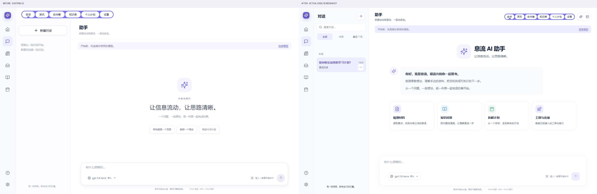

<!doctype html><html lang="zh-CN"><meta charset="utf-8"><meta name="viewport" content="width=device-width,initial-scale=1"><title>息流 · 导航与助手改造对照</title><style>body{margin:0;background:#f7f6fb;color:#2a2636;font:15px/1.6 system-ui}header{padding:26px 4vw;background:white}h1{font-size:24px;margin:0 0 8px}p{margin:0;color:#756e83}nav{display:flex;gap:8px;flex-wrap:wrap;padding:18px 4vw;position:sticky;top:0;background:#f7f6fbf2}button,a{font:inherit;color:#7651b9;border:1px solid #e3ddef;background:white;padding:8px 14px;border-radius:10px;cursor:pointer;text-decoration:none}button[aria-pressed=true]{background:#eae1fc}main{padding:0 3vw 35px}img{display:block;width:100%;height:auto;margin:auto;border-radius:15px;background:white;box-shadow:0 8px 30px #50317609}</style><header><h1>息流 · 导航、任务状态与 Assistant</h1><p>原版图标左栏 · 页面右上导航 · 高清山水 · 三态任务 · 新 Assistant</p></header><nav><button data-img="compare-assistant.png" aria-pressed="true">助手前后</button><button data-img="assistant-reference-comparison.png">助手参考图</button><button data-img="assistant-conversation-desktop.png">对话与执行记录</button><button data-img="assistant-mobile.png">手机助手</button><button data-img="compare-workbench.png">首页前后</button><button data-img="compare-today.png">原有主题导航</button><button data-img="plans-in-progress.png">进行中任务</button><button data-img="compare-feed.png">资讯导航</button><a href="README.md">完整记录</a><a href="http://127.0.0.1:5198/assistant" target="_blank" rel="noopener">打开项目</a></nav><main></main><script>const img=document.querySelector('#shot');document.querySelectorAll('[data-img]').forEach(b=>b.addEventListener('click',()=>{document.querySelectorAll('[data-img]').forEach(x=>x.setAttribute('aria-pressed','false'));b.setAttribute('aria-pressed','true');img.src=b.dataset.img;img.alt=b.textContent;img.style.maxWidth=b.dataset.img==='assistant-mobile.png'?'390px':'none'}));img.addEventListener('click',()=>window.open(img.src,'_blank','noopener'))</script></html>
